A Handmade, Debt-Free Home
Blend vision, patience and perseverance and you can build your dream home.
By Steve Maxwell
February/March 2007
The scariest moment of my life came at 6:30 a.m. on Thursday, May 15, 1986. That was when I woke up in a wet tent, pitched next to a rusty, 18-year-old pickup truck, 500 miles from the boyhood home I’d just left for the first time in my life. While my buddies were jetting around the country building snazzy business careers around their brand-new college degrees, I was sinking deeply into regret. How could the idea of building a no-compromise country house have seemed so compelling when I signed the deed? How could my dream turn so terrifying now that I was about to begin?
Later that day, as I snipped through the rusty, tumbledown wire fence to make a driveway at the north end of my new 91½ acres, I felt a little better. Later that summer, when a foundation hole was dug, life seemed OK. And as I laid the first limestone blocks in the basement, I celebrated with a glass of sweet wine. Three and a half years later, on a cold, gray November day, I nailed down the final roof shingle - and life was good indeed.
Today, I wouldn’t trade my house or country life for any number of fancy business careers. And now my dream home can be your dream home - I’ve worked with illustrator Len Churchill and Mother Earth News to create “study plans,” which you can use to build something similar.
Welcome to the Maxwell House
On the quiet Ontario island of Manitoulin, at the end of a tree-lined gravel road, you’ll find our three-story Victorian-style stone and timber house. The place looks old, but it’s actually built entirely to modern standards. It’s the most visible part of a lifelong work that my wife, Mary, and I began here in our early 20s. The vision we shared for our field-and-forest property has remained consistent ever since.
With no formal construction training other than a good high school shop program, we depended on research that involved lots of reading and observation. To get hands-on experience, I worked in cabinetmaking shops and construction sites in Toronto (a seven-hour drive away) during the winters, while Mary worked on her nursing degree. Then we’d return each spring from 1986 through 1991 to Manitoulin to continue building while living frugally in the 10-by-20-foot wood frame shed we built for $550. (For more information, see “Build This Cozy Cabin,” June/July 2006.)
Beginning with a clean slate and an empty hay field, we aimed to design and build a place of beauty, peace and permanence. The house is part of a work in progress for our land, but before I take you on a tour, you need to understand three important influences.
The first has to do with economy, both financial and environmental. We’ve always believed in spending wisely, avoiding debt and treading lightly on the planet. One of the reasons we chose to do all our own designing and building is because it allowed us to earn the money we needed as we went along. This slow road of self-reliant accomplishment also gave us time to plan carefully, addressing the real needs of our family in an environmentally reasonable way. When we were finished, we estimated our home’s out-of-pocket cost to build was $35 per square foot.
The second driving force is our commitment to aesthetics. We go farther than most in our quest to create the right “feel” for our place. The 24-inch-thick stone walls of the basement, the hand-carved wood trim and the 150-foot wrap-around veranda may seem extravagant to some. But that’s OK. To us, the thrill of experiencing the structure of enduring beauty we’ve created is well worth the effort.
The last point has to do with our motivation. We’ve never made a single home-building decision based on how lucrative it will be, because we never intend to sell this place. Once you establish that standard, priorities shift from expedience to quality.
Dream Home by Design
We developed plans for our house using graph paper, a scale model and an engineering span table to determine the sizes of load-bearing frame members. All exterior walls are made of a 2-by-6 stud frame with exposed posts and beams inside. In addition to the fiberglass insulation between the studs, we applied an exterior layer of 1½-inch-thick extruded polystyrene foam to the outside face of the structure. This unbroken layer of insulation boosts thermal performance considerably compared with stud-only designs. We also installed interlocking asphalt shingles on the walls as a temporary sheathing to protect against the elements while we completed the home’s exterior, made from locally quarried limestone.
The hand-cut limestone foundation walls sit on ultra-smooth bedrock, with scratch marks cut by glaciers (called “striations”) still plainly visible today.
The roof is steep, and framed with rafters in a traditional style, creating an open third-story loft that’s useful year-round. Ventilated rafter channels keep airflow moving from eaves to peak while preserving space for insulation.
The prospect of a wrap-around veranda (see photo) seemed so daunting that we almost abandoned our plans for it, but that would have been a big mistake. Even though it’s only 6½ feet wide, the effect of this feature makes a lot of practical and aesthetic sense. If you were ever to visit us, sitting on a deck chair reading a good book during a gentle July rain, you’d see exactly what I mean. The veranda roof also provides plenty of cool shade for our kids, a sheltered place for shade-loving hanging plants and considerable protection for windows and doors. In addition, the deck finish lasts longer thanks to the overhang of the roof. Quality dwells in the details, and this philosophy extends to our veranda. Though we built it with standard construction-grade lumber, routed edge details transform the wood in surprising ways.
One of the most useful features of our home is the extra-wide outside entrance to the basement (see photo). It’s part of the traditional limestone wall that forms the foundation, though the entrance could be built in a more conventional way that matches whatever style of basement you want. Regardless of how you build it, the 48-inch-wide doorway is great. It’s large enough to allow produce, firewood and large tools to be moved in and out of the basement as needed.
Mary and I love wood, so I’ve used this material wherever possible inside without overdoing it. The floors are locally cut and milled white pine, finished to a cinnamon brown color. We’ve also used the same wood and finishing strategy for kitchen cabinets, bathroom wainscoting and built-in storage areas (see photo).
We crafted almost every feature of this house ourselves, even the exterior doors. The 3-inch-thick insulated wooden “warm doors” (see photo) I designed are one feature I strongly recommend for people who want to move beyond the ordinary and reduce heat loss. There are three layers to my design: a 1-inch-thick interior pine frame sheathed in narrow tongue and groove pine on interior and exterior faces. I cut pieces of rigid foam to fit within spaces in the central frame, caulking the joints between pieces of tongue-and-groove wood as they were installed with hidden nails and construction adhesive.
For 13 of the 16 years we’ve lived in our house, we’ve heated it using about a dozen cords of wind-fallen poplar and other softwood each year. We burn it in a masonry heater (see photo), which makes all the difference. This is an age-old technology that burns wood quickly and with very little smoke at temperatures approaching 2,000 degrees. Heat from the combustion gases transfers to the surrounding 5,000 pounds of refractory mortar and limestone that make up the heater. As the gases pass through the 13 feet of internal passageways before entering the base of the chimney, the stone picks up heat. The accumulated energy then transfers slowly to the house after the fire is completely burned out and the flue closed. Combustion is clean, safe and short-lived. During the last three years, extra building projects have prevented me from cutting our own firewood, so we’ve switched temporarily to a pellet stove. We burn about 3 tons of pellets in a heating season that lasts from mid-October to mid-May. Pellets cost about the same as firewood, but it’s easier and quicker to handle bags of pellets.
We could have enjoyed more living space in our design, but we opted to devote about one-fifth of the second floor area to an open cathedral ceiling space above the living room (see photo) and masonry heater. Light, space and a chance to expose some beautiful white pine timbers are the reasons we recommend this approach. It also allows the wooden stair stringers to be showcased in a way that wouldn’t have the same impact otherwise.
The importance of trim and architectural woodwork (see photo) are often overlooked because they come near the end of the building process. Owners are often eager to move in at this stage, with budgets running tight. But skipping this step is a risk because trim exerts some of the most powerful influences on the atmosphere of a house. We milled all our own molding and wainscoting from inexpensive, locally cut pine routed to simple, classic profiles for a beautiful effect.
Built New to Look Old
One of the best compliments we receive about our home comes in the form of a question that visitors often ask as they step into our yard for the first time: “Is this a historic home that you’ve renovated?” Even professional builders sometimes wonder, and the reason is the stonework.
We laid a 9-inch-thick layer of hand-squared, limestone blocks to form the exterior surfaces of the stud frame walls using local materials we gathered ourselves. It takes months of work to complete the same amount of wall you could cover in a day with vinyl siding, but we wouldn’t consider anything other than stone. Besides, when you consider the amount of maintenance required by a finished, wooden exterior over the course of a lifetime, hand-quarried stone isn’t any more work.
Things We Might Change
There are only a few things we’d change about our design, and a couple are worth mentioning. The open concept living space created by the cathedral ceiling in the downstairs living room looks terrific, but when we created our design back in the mid-1980s, we didn’t realize just how noisy a houseful of kids could be. So if you’d like to reduce sounds traveling from upstairs down into the kitchen, you might consider closing in the cathedral space and gaining another 200 square feet of floor area in the bargain.
Another thing you should consider is the orientation of the house relative to the sun. Our future plans include enclosing the south side of the veranda with windows to capture solar heat. We realized too late that having our bedrooms facing west means we miss glorious morning light. East-facing bedrooms are definitely worth the trouble, even if it means flipping the floor plan around end-for-end to make it happen.
I laid that first limestone block of the basement foundation on July 4, 1987, and the house was livable and comfortable by the spring of 1991. I’m still building today (finishing a four-season attic loft and completing exterior stonework). This sounds like an awfully long time, but we’ve never had a mortgage looming over our heads, thanks to modest help from family and the ability to live rent-free with my grandfather during the winter months as we worked for the funds necessary to continue our work.
Building your own house is a big commitment. But don’t be discouraged. If you give yourself time and keep working, the results are definitely worth it. And always remember that consistent hard work and a vision worth sweating for can prevail against whatever challenges you encounter.
FEATURES AT A GLANCE
- 2,500 sq. ft. on three aboveground floors
- 34’ x 44’ footprint, plus 6½’ veranda all around
- 2x6 stud frame exterior walls, insulated with fiberglass batts and 1½” of extruded polystyrene foam applied to the outside face
- 24”-thick hand-cut limestone basement built on bedrock marked with glacial striations
- Exposed, locally harvested pine timbers in kitchen, living room and second-floor family space
- Four bedrooms, two full bathrooms with low-flow toilets
- 1,000-gallon septic system
- Artist’s loft on third floor
- Limestone masonry heater
- Locally quarried limestone exterior facing
- Out-of-pocket costs to build: about $35 per square foot
- Contributing editor Steve Maxwell (see photos in image gallery) writes many of our “Do It Yourself” articles, such as “Build this Cozy Cabin” and “A Blueprint for Better Building.” You can read all Steve’s previous Mother Earth News articles by searching for his name at www.MotherEarthNews.com.
You Can Build This Incredible Dream Home!Our study plans package for the Maxwell Victorian Home will give you a closer look at its design. You can modify the design to your liking and then build the home, either by yourself or with the help of professionals. The package costs $19.95 and includes: |
|
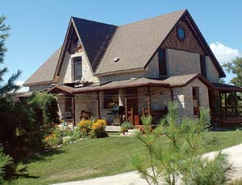 STEVE MAXWELL Steve and Mary Maxwell built their Victorian-style handcrafted house for an out-of-pocket cost of $35 per square foot. Their family of six resides comfortably on Manitoulin Island in Ontario, Canada. |
 STEVE MAXWELL Steve and Mary Maxwell’s hand-crafted wraparound porch. |
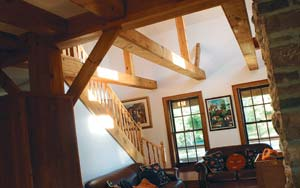 STEVE MAXWELL An open cathedral ceiling exposes the pine beams and brings light into the living area. |
|
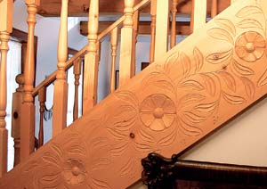 STEVE MAXWELL Hand-carved designs incorporated throughout the Maxwell house add visual interest, character and value. |
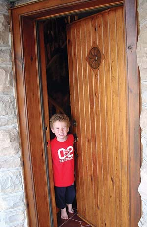 STEVE MAXWELL The author’s son, Joseph, welcomes you inside through the three-layer, insulated "warm door." |
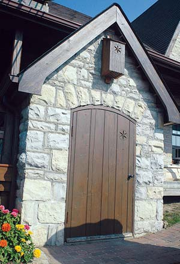 STEVE MAXWELL The 48-inch-wide outside entrance allows produce, firewood and large tools to be carried in and out of the lower level with ease. |
|
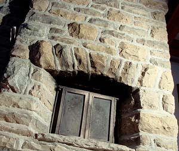 STEVE MAXWELL Combustion gases allow the masonry heater to accumulate heat and slowly transfer it to the house. |
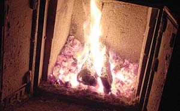 STEVE MAXWELL Combustion gases allow the masonry heater to accumulate heat and slowly transfer it to the house. |
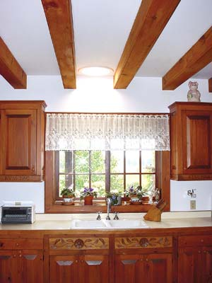 STEVE MAXWELL Solatube tubular skylights add natural light to the kitchen. |
|
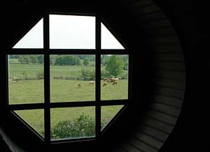 STEVE MAXWELL "We aimed to design and build a place of beauty, peace and permanence." |
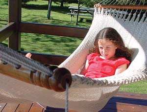 STEVE MAXWELL Katherine Maxwell enjoys a sunny spot in a hammock on the wrap-around veranda. Steve (below) and his family love their veranda - it’s a great place to sit, relax and enjoy the outdoors, while still being protected from the elements. |
 ROGER YIP Contributing editor Steve Maxwell writes many of our "Do It Yourself" articles, such as "Build this Cozy Cabin" and "A Blueprint for Better Building." You can read all Steve’s previous Mother Earth News articles by searching for his name at www.MotherEarthNews.com. |
|
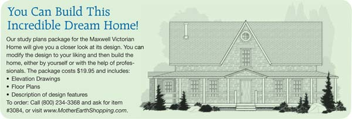 LEN CHURCHILL |
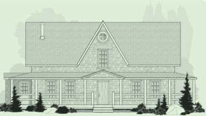 LEN CHURCHILL |
|